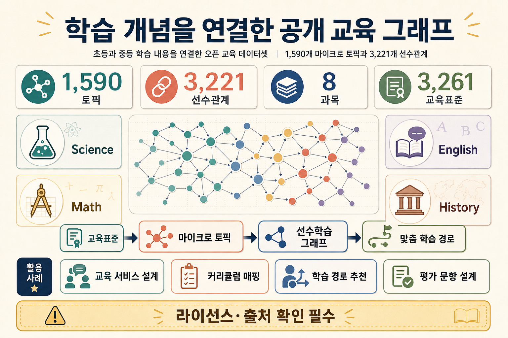

ONE-LINE PURPOSE
학습 개념을 “그래프 데이터”로 다루게 해주는 공개 교육 분류체계
초등·중등 기초 학습 내용을 1,590개 마이크로 토픽과 3,221개 선수학습 관계로 연결한 공개 교육 데이터셋입니다.
교육 데이터셋선수학습 그래프JSON 스키마커리큘럼 정렬
REPO SIGNALS
817GitHub Stars
147Forks
ODbL + CC BY-SA데이터/콘텐츠 라이선스
v1초기 공개 릴리스

초등·중등 기초 학습 내용을 1,590개 마이크로 토픽과 3,221개 선수학습 관계로 연결한 공개 교육 데이터셋입니다.